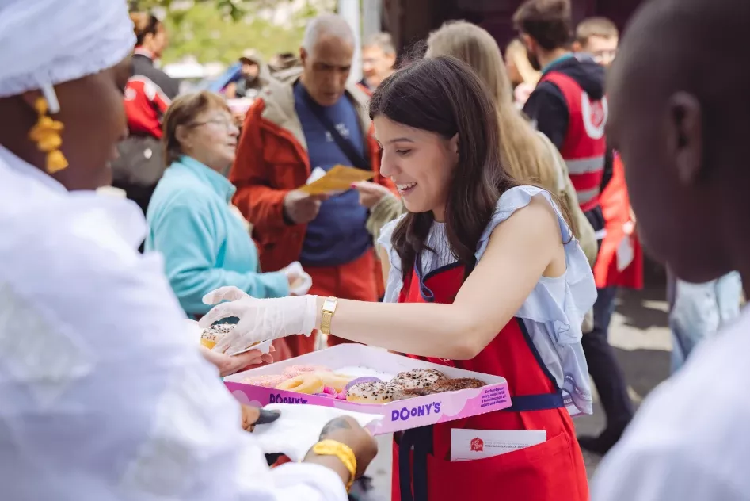

Retour sur le Donut Day 2025 : une journée festive et solidaire
Le vendredi 6 juin 2025, l’Armée du Salut célébrait la troisième édition française du Donut Day...

Le vendredi 6 juin 2025, l’Armée du Salut célébrait la troisième édition française du Donut Day, une journée mondiale de solidarité… et vous étiez au rendez-vous !
Une mobilisation nationale
De Lille à Marseille, en passant par Paris, Strasbourg, Nancy, Lyon et bien d’autres villes, le Donut Day a rayonné dans plus de 45 villes de France. Grâce à la générosité de notre partenaire Doony’s, près de 60 000 donuts ont été partagés avec le grand public, les partenaires, les résidents, les bénévoles et les passants.
Une tradition solidaire venue du front
Cette journée est bien plus qu’un simple moment de gourmandise : elle rend hommage à un épisode méconnu de la Première Guerre mondiale. À cette époque, des femmes volontaires de l’Armée du Salut – surnommées les “Donut Lassies” – soutenaient le moral des soldats en leur confectionnant des beignets, parfois même frits dans des casques ! Depuis 1938, le Donut Day perpétue cette tradition aux États-Unis, et en France depuis 2023.
Un clip musical pour célébrer l’esprit du Donut Day
Nouveauté 2025 : le Donut Day a désormais son clip musical officiel ! Entre bonne humeur, donuts et musique entraînante, ce clip incarne parfaitement l’esprit de partage qui a animé cette journée. À écouter et partager sans modération !
Un immense merci à toutes les équipes de terrain, aux bénévoles, aux salariés engagés, aux partenaires, et à toutes celles et ceux qui ont contribué à faire de cette journée un véritable moment de partage, de sourires et de lien humain. Rendez-vous en 2026 pour une édition encore plus savoureuse, festive et solidaire !
Participez à nos projets
Rejoignez les bénévoles ou soutenez nos actions solidaires dès aujourd’hui !
Je participe